Computer Network - Connection Oriented Transport TCP
1️⃣ The TCP Connection
- Connection-oriented: Before one application process can begin to send data to another, the two processes must first “handshake” with each other - that is, they must send some preliminary segments to each other to establish the parameters of ensuing data transfer.
- Full-duplex service: If there is a TCP connection between Process A on one host and Process B on another host, then application-layer data can flow from Process A to Process B at the same time as application-layer data flows from Process A to Process B.
- Point-to-point: Between a single sender and a single receiver.
- Multicasting: The transfer of data from one sender to many receivers in a single send operation, which is not possible with TCP.
- Three-way handshake: Three segments sent between the two hosts.
- Send buffer: One of the buffers that is set aside during the initial three-way handshake.
- Maximum segment size (MSS): The maximum amount of data that can be grabbed and placed in a segment.
- Maximum transmission Unit (MTU): Length of the largest link-layer frame that can be sent by the local sending host.
- TCP segments: Passed down to the network layer, where they are separately encapsulated within network-layer IP datagrams.
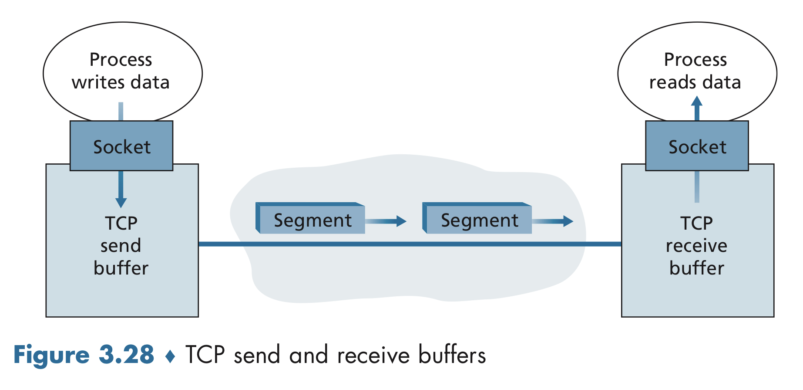
2️⃣ TCP Segment Structure
The TCP segment header contains the following fields:
- Source and destination port numbers which is used for multiplexing/demultiplexing data from/to upper-layer applications.
- Checksum field
- The 32-bit sequence number field and the 32-bit acknowledgement number field are used by the TCP sender and receiver in implementing a reliable data transfer service.
- The 16-bit receive window field is used for flow control.
- The 4-bit header length field specifies the length of the TCP header in 32-bit words. The TCP header can be of variable length due to the TCP options field.
- The optional and variable-length options field is used when a sender and receiver negotiate the maximum segment size (MSS) or as a window scaling factor for use in high-speed networks. A time-stamping option is also defined.
- The flag field contains 6 bits. The ACK bit is used to indicate that the value carried in the acknowledgement field is valid; that is, the segment contains an acknowledgement for a segment that has been successfully received. The RST, SYN, and FIN bits are used for connection setup and teardown. The CWR and ECE bits are used in explicit congestion notification. Setting the PSH bit indicates that the receiver should pass the data to the upper layer immediately. Finally, the URG bit is used to indicate that there is data in this segment that the sending-side upper-layer entity has marked as “urgent”. The location of the last byte of this urgent data is indicated by the 16-bit urgent data pointer field. TCP must inform the receiving-side upper-layer entity when urgent data exists and pass it a pointer to the end of the urgent data.
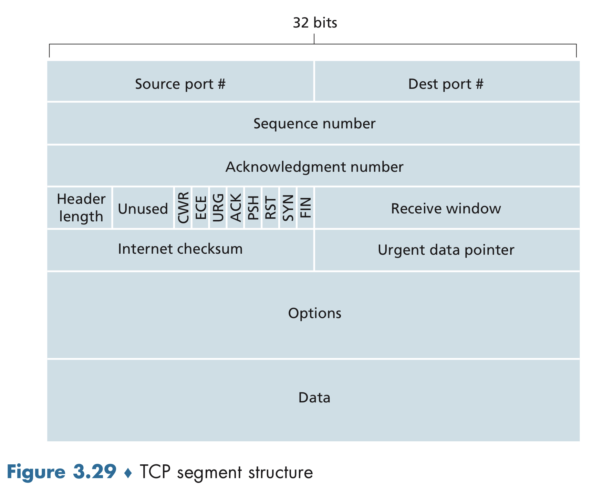
Sequence Numbers and Acknowledgement Numbers
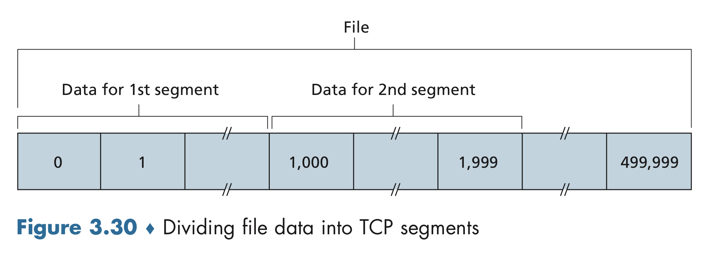
- Sequence number for a segment: The byte-stream number of the first byte in the segment.
- Cumulative acknowledgements: The concept of TCP that it only acknowledges bytes up to the first missing byte in the stream.
When a computer receives out-of-order segments in a TCP connection, the programming implementing a TCP implementation can decide to either:
- The receiver immediately discards out-of-order segments
- The receiver keeps the out-of-order bytes and waits for the missing bytes to fill in the gaps.
Telnet: A Case Study for Sequence and Acknowledgement Numbers
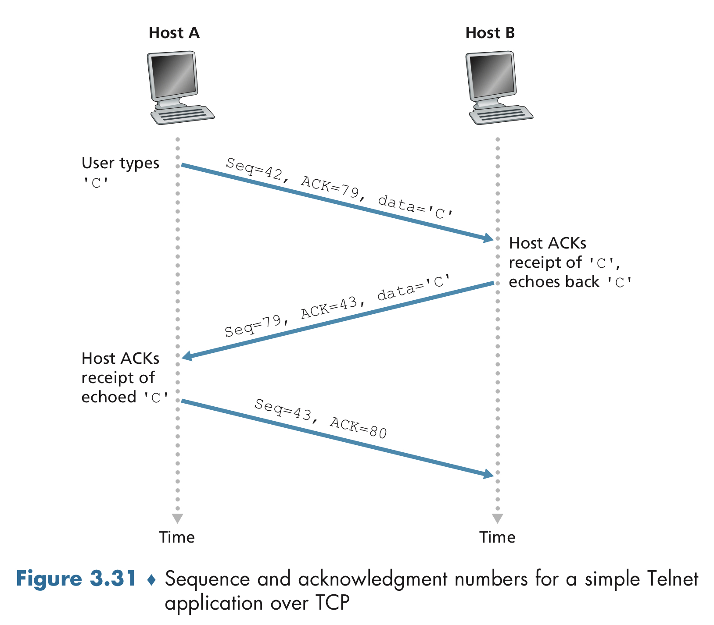
- Piggybacked: The acknowledgement for client-to-server data is carried in a segment carrying server-to-client data.
3️⃣ Round-Trip Time Estimation and Timeout
Estimating the Round-Trip Time
Upon obtaining a new SampleRTT, TCP updates EstimatedRTT according to the following formula:
- EstimatedRTT: An average, which the new value of EstimatedRTT is a weighted combination of the previous value EstimatedRTT and the new value for SampleRTT.
The recommended value of α is α = 0.125, in which case the formula above becomes:
- Exponential weighted moving average (EWMA): The weighted average puts more weight on recent samples better reflect
the current congestion in the network. The word “exponential” appears because the weight of a given
SampleRTTdecays exponentially fast as the updates proceed.
DevRTT is an estimate of how much SampleRTT typically deviates from EstimatedRTT:
| &space;\cdot&space;DevRTT&space;+&space;\beta&space;\cdot&space; | SampleRTT&space;-&space;EstimatedRTT | ) |
If the SampleRTT values have little fluctuation, then DevRTT wil be small and vica-versa. The recommended value of β
is 0.25.
Setting and Managing the Retransmission Timeout Interval
Formula to determine the retransmission timeout interval:
An initial TimeoutInterval value of 1 second is recommended.
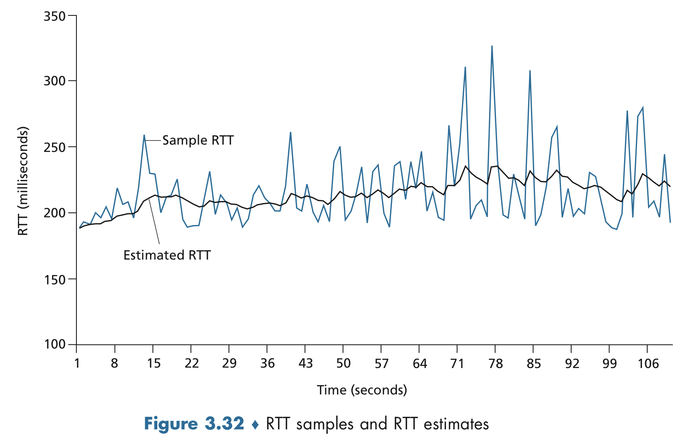
4️⃣ Reliable Data Transfer
- Reliable data transfer service: Created by TCP on top of IP’s unreliable best-effort service, it ensures that the data stream that a process reads out of its TCP receive buffer is uncorrupted, without gaps, without duplication, and in sequence.
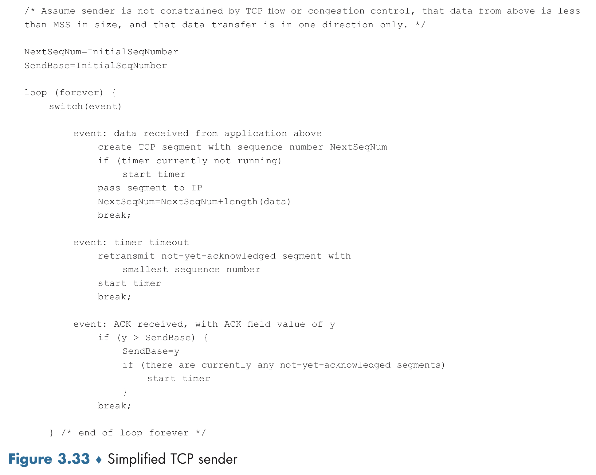
The 3 major events related to data transmission and retransmission in the TCP sender
- Data received from application above.
- Timer timeout
- ACK receipt
A Few Interesting Scenarios
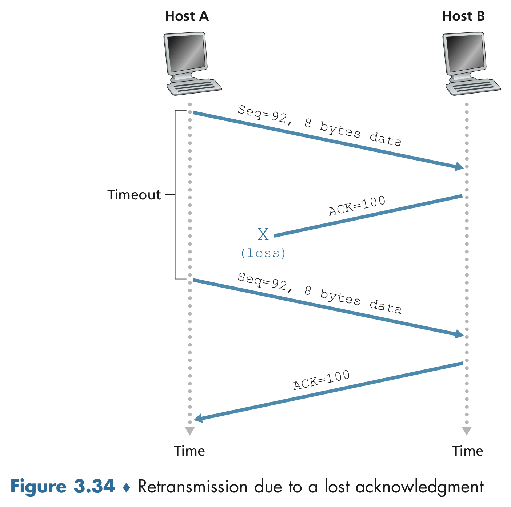
Doubling the Timeout Interval
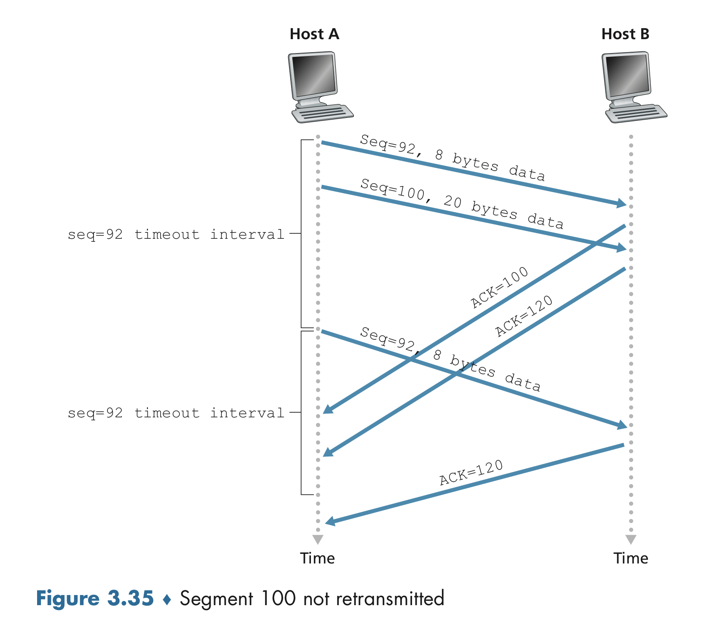
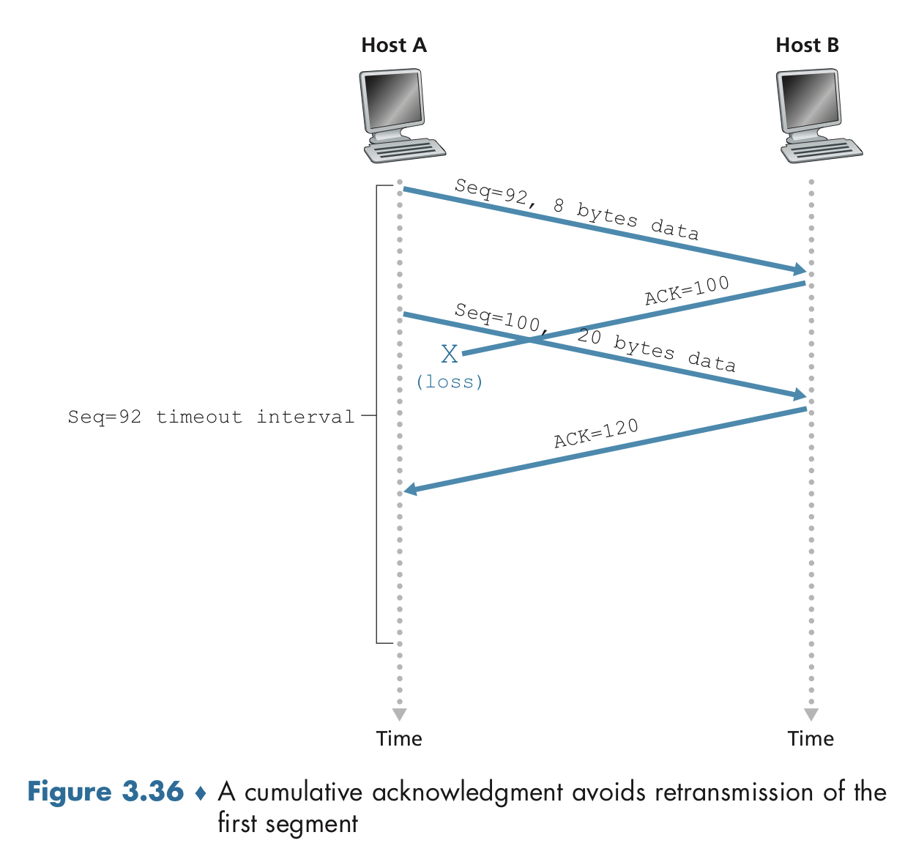
Fast Retransmit
- Duplicate ACK: An ACK that re-acknowledges a segment for which the sender has already received an earlier acknowledgement.
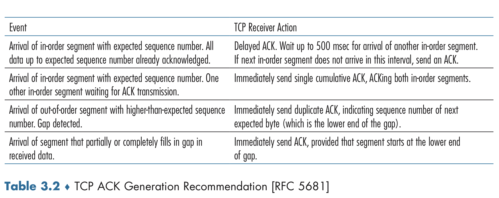
- Fast retransmit: Retransmission of the missing segment before that segment’s timer expires.Performed by sender when three duplicate ACKs are received.
event: ACK received, with ACK field value of y
if (y > SendBase) {
sendBase = y
if (there are currently any not yet acknowledged segments)
start timer
}
else { /* a duplicate ACK for already ACKed segment */
increment number of duplicate ACKs received for y
if (number of duplicate ACKs received for y == 3)
/* TCP fast retrnasmit */
resend segment with sequence number y
}
break;
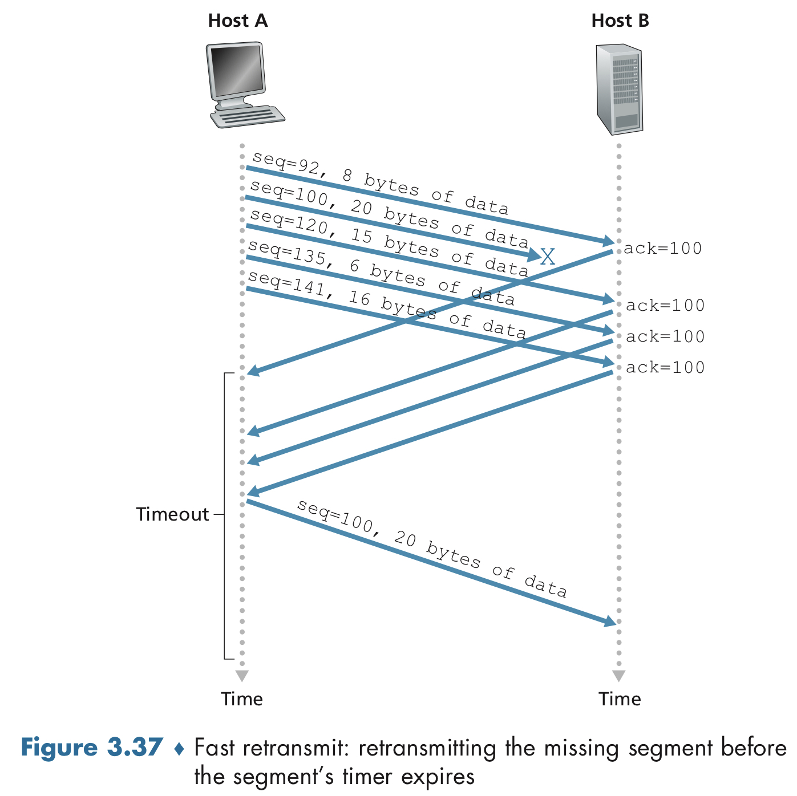
Go-Back-N or Selective Repeat?
- Selective acknowledgement: A proposed modification to TCP, it allows a TCP receiver to acknowledge out-of-order segments selectively rather than just cumulatively acknowledging the last correctly received, in-order segment.
5️⃣ Flow Control
- Flow-control service: Provided by TCP to its applications, it eliminates the possibility of the sender overflowing the receiver’s buffer.
- Congestion control: A TCP sender can also be throttled due to congestion within the IP network.
- Receiver window: A variable maintained by the sender for flow control.
Host B allocates a receive buffer to this connection; denote its size by RcvBuffer. From time to time, the application process in Host B reads from the buffer. Define the following variables:
- LastByteRead: The number of the last byte in the data stream read from the buffer by the application process in B.
- LastByteRcvd: The number of the last byte in the data stream that has arrived from the network and has been placed in the receive buffer at B.
Because TCP is not permitted to overflow the allocated buffer, we must have
LastByteRcvd - LastByteRead <= RcvBuffer
The receive window, denoted rwnd is set to the amount fo spare room in the buffer:
rwnd = RcvBuffer - [ LastByteRcvd - LastByteRead ]
Host A makes sure throughout the connection’s life that
LastByteSent - LastByteAcked <= rwnd
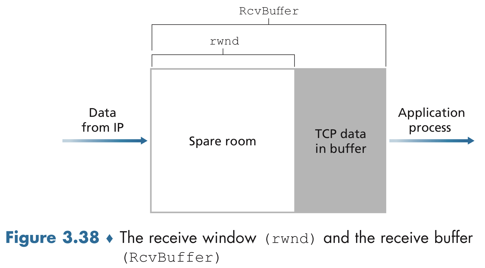
6️⃣ TCP Connection Management
- SYNACK segment: Connection-granted segment.
How TCP connection is established
- The client-side TCP first sends a special TCP segment to the server-side TCP. This special segment contains segment to the server-side TCP. This special segment contains no application layer data. But one of the flag bits in the segment’s header, the SYN bit, is set to 1. In addition, the client randomly chooses an initial sequence number (client_isn) and puts this number in the sequence number field of the initial TCP SYN segment. This segment is encapsulated within an IP datagram and sent to the server.
- Once the IP datagram containing the TCP SYN segment arrives at the server host, the server extracts the TCP SYN segment from the datagram, allocates the TCP buffers and variables to the connection, and sends a connection-granted segment to the client TCP. This connection-granted segment also contains no application-layer data. However, it does contain three important information in the segment header. First, the SYN bit is set to 1. Second, the acknowledgement field of the TCP segment header is set to client_isn+1. Finally, the server chooses its own initial sequence number (server_isn) and puts this value in the sequence number field of the TCP segment header.
- Upon receiving the SYNACK segment, the client also allocates buffers and variables to the connection. The client host then sends the server yet another segment; this last segment acknowledges the server’s connection-granted segment. The SYN bit is set to zero, since the connection is established. This third stage of the three-way handshake may carry client-to-server data in the segment payload.
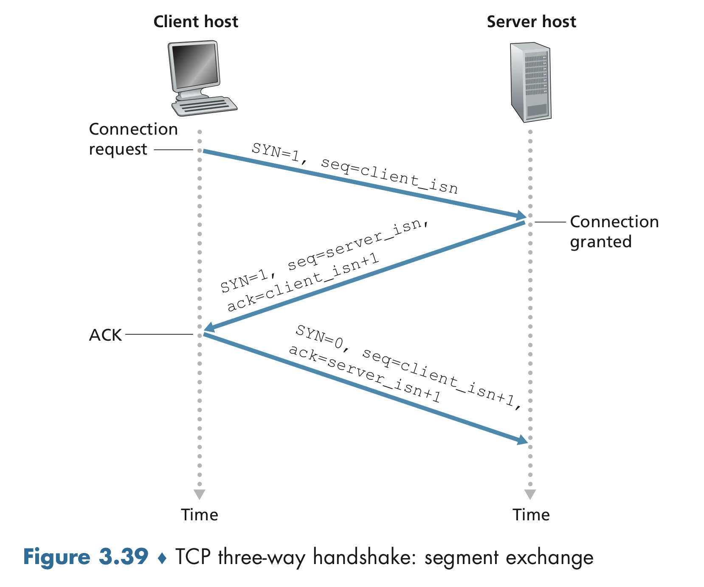
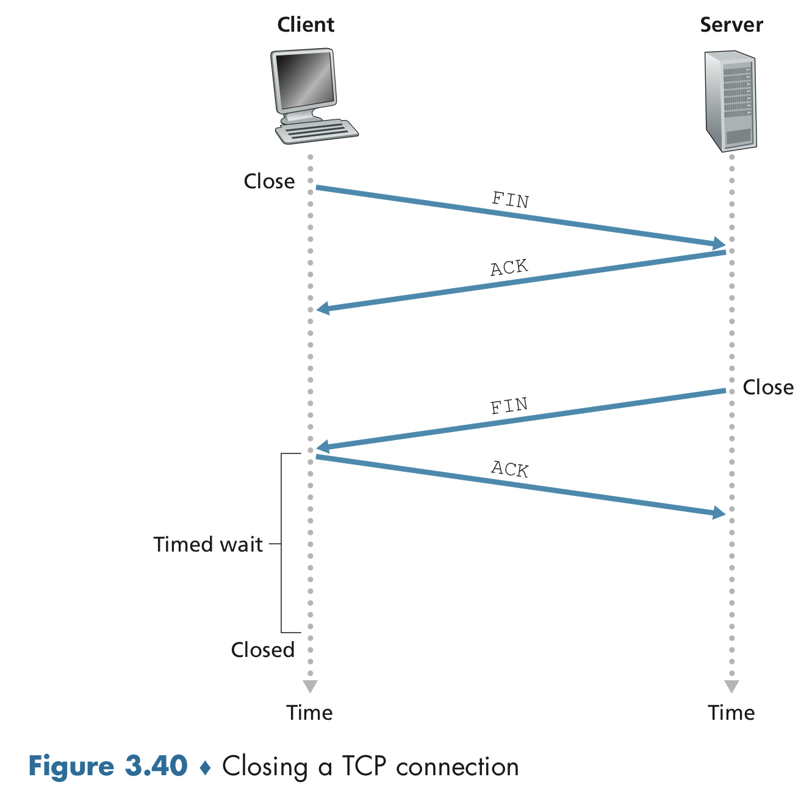
- TCP states: The TCP protocol running in each host makes transitions with this during the life of a TCP connection.
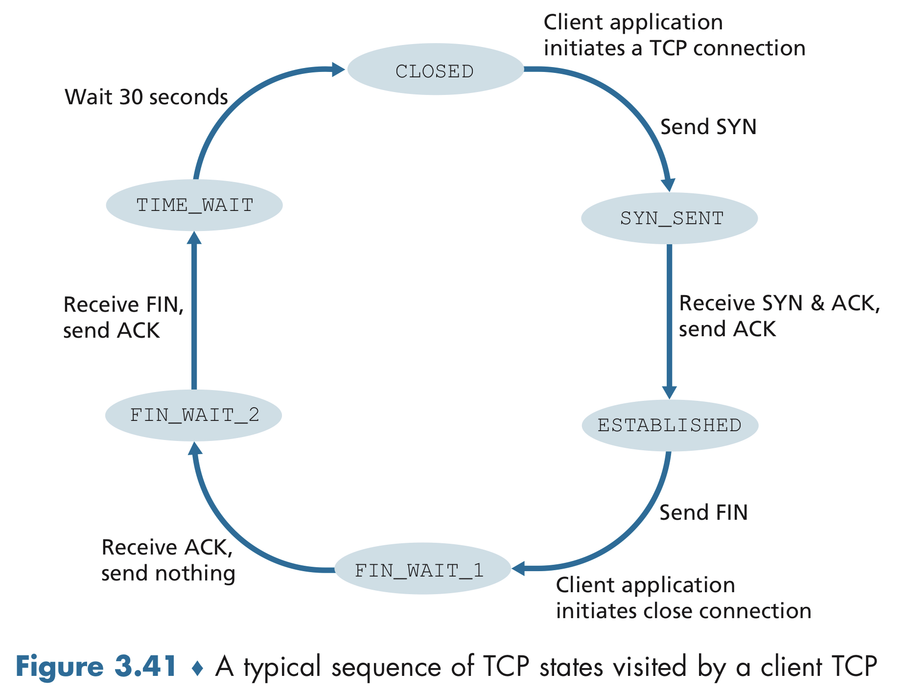
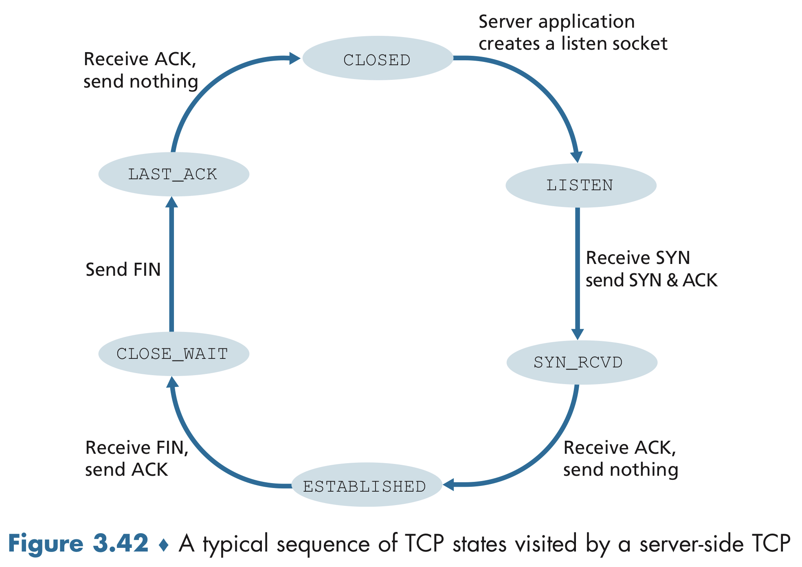
To explore a specific TCP port, say port 8080, on a target host, nmap will send a TCP SYN segment with destination port 8080 to that host. There are 3 possible outcomes:
- The source host receives a TCP SYNACK segment from the target host. Since this means that an application is running with TCP port 8080 on the target post, nmap returns “open”.
- The source host receives a TCP RST segment from the target host. This means that the SYN segment reached the target host, but the target host is not running an application with TCP port 8080. But the attacker at least knows that the segments destined to the host at port 8080 are not blocked by any firewall on the path between source and target hosts.
- The source receives nothing. This likely means that the SYN segment was blocked by an intervening firewall and never reached the target host.
Reference
- Computer Networking 8th: A Top-Down Approach by James Kurose and Keith Ross
- Computer Network Lecture by Seungsik Choi in Incheon National University